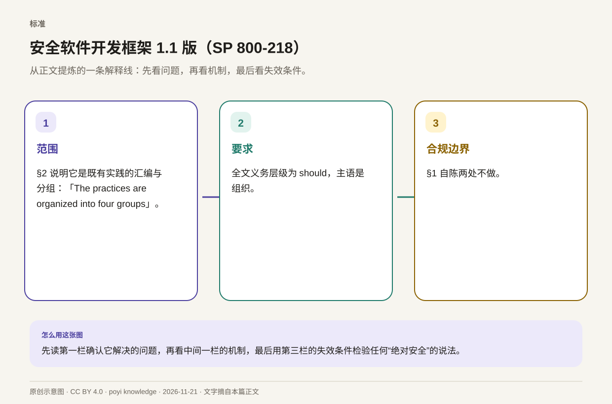
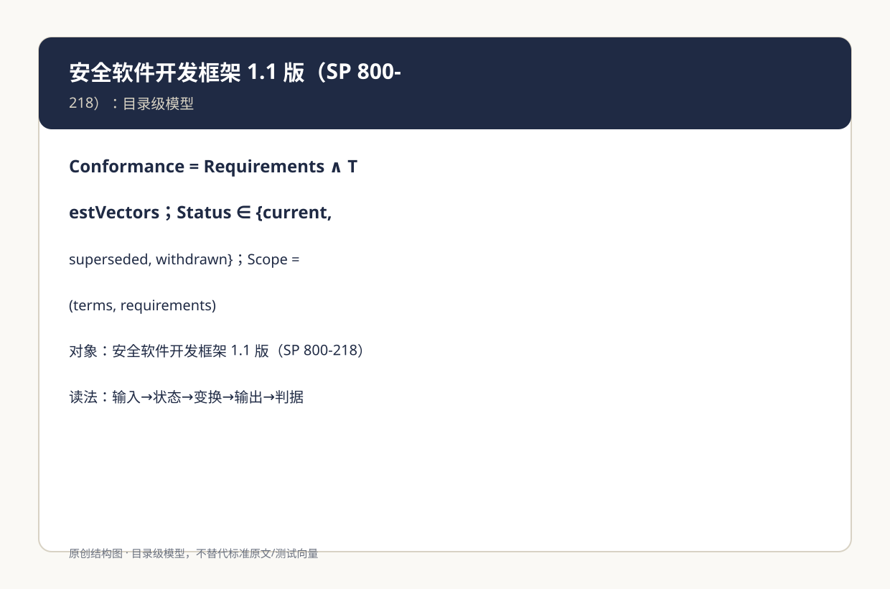

原理与机制
标准：安全软件开发框架（SP 800-218）（Secure Software Development Framework (SSDF) Version 1.1 Recommendations for Mitigating the Risk of Software Vulnerabilities）。摘要先点名对象：「This document recommends the Secure Software Development Framework (SSDF)」，随即给出其构成：「a core set of high-level secure software development practices that can be integrated into each SDLC implementation」。扉页标题行为「Secure Software Development Framework (SSDF) Version 1.1」与「Recommendations for Mitigating the Risk of Software Vulnerabilities」；§2 说明它是既有实践的汇编与分组：「The practices are organized into four groups」。三段合起来说明性质：它是可并入任一生命周期的高层实践集，本身不引入新实践与新术语，四组结构是它的主要产出。

为什么重要
缺口写在摘要首句：「Few software development life cycle (SDLC) models explicitly address software security in detail, so secure software development practices usually need to be added to each SDLC model to ensure that the software being developed is well-secured.」§1 同一判断落到做法：「secure software development practices should be integrated throughout it for three reasons: to reduce the number of vulnerabilities in released software」。摘要还给出受让方一侧的理由：「Because the framework provides a common vocabulary for secure software development, software acquirers can also use it to foster communications with suppliers in acquisition processes and other management activities.」引文把问题分置两端：生产端的缺口是安全实践未写进模型，采购端的缺口是双方缺少共同词汇，框架同时对着这两处。
应用与实例
全文义务层级为 should，主语是组织。执行摘要给出总要求：「Organizations should integrate the SSDF throughout their existing software development practices, express their secure software development requirements to third-party suppliers using SSDF conventions, and acquire software that meets the practices described in the SSDF.」§2 的四组定义逐组以组织为主语，其中「2.Protect the Software (PS): Organizations should protect all components of their software from tampering and unauthorized access.」§1 另把云场景的分配义务落到租户：「The tenant organization should establish an agreement with the providers that specifies which party is responsible for each practice and task and how each provider will attest to their conformance with the agreement.」三句的主语都是组织或租户，层级全是 should：框架给的是建议而非强制条款，责任分配则要求写进协议，指明由谁执行各实践以及谁来证明。

边界与攻击面
§1 自陈两处不做。一是不给实现办法：「This document identifies secure software development practices but does not prescribe how to implement them.」二是不造新词与新实践：「This document does not introduce new practices or define new terminology.」同一节又限制使用方式：「The intention of the SSDF is not to create a checklist to follow, but to provide a basis for planning and implementing a risk-based approach to adopting secure software development practices.」与既有框架的关系也有限：脚注说明「the SSDF practices do not map to them」，即可支持网络安全框架但不与之映射。
历史与背景
扉页首行「NIST Special Publication 800-218」，作者三位为 Souppaya、Scarfone 与 Dodson，其中第三位的身份注记为「Former NIST employee; all work for this publication was done while at NIST.」；日期行 2022 年 2 月，引用行「Natl.Inst.Stand.Technol.Spec.Publ.800-218, 36 pages (February 2022) CODEN: NSPUE2」，免费获取行后接 DOI 10.6028/NIST.SP.800-218。对象由受众一节界定：「There are two primary audiences for this document.The first is software producers」。致谢页列出协助者：「The authors thank all of their NIST colleagues for their support throughout the SSDF update」。文末读者说明一节交代它的时效：「The publication will be updated periodically to reflect your inputs and feedback.」
逐步示例与核验
形式模型与复算步骤
[S=\min_i S_i,\quad S_i\in{\text{密钥强度},\text{分组安全},\text{实现安全}}]
安全软件开发框架（SP 800-218）的公开参数、密钥/随机数与消息；变量说明：S 为综合安全强度；各分量取最小值，不能只看密钥位数。1.读取标准规定的密钥/分组/模式参数。2.按标准表换算等效强度。3.取最弱分量作为系统强度。边界：公式只覆盖已登记的参数与假设；参数取值、标准版本和实现细节仍以来源为准。
参考出处
- Wikipedia search entry for 安全软件开发框架（SP 800-218）. https://zh.wikipedia.org/w/index.php?search=%E5%AE%89%E5%85%A8%E8%BD%AF%E4%BB%B6%E5%BC%80%E5%8F%91%E6%A1%86%E6%9E%B6%EF%BC%88SP%20800-218%EF%BC%89
- Handbook of Applied Cryptography (Menezes, van Oorschot, Vanstone). https://www.cacr.math.uwaterloo.ca/hac/